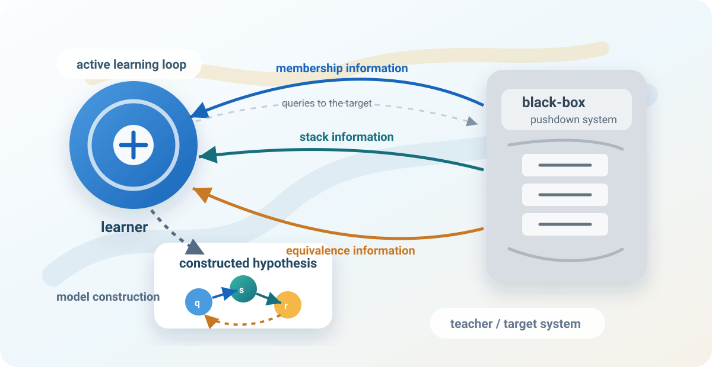

Learning and Equivalence of Automata with Resources
LEARn | F.R.S.-FNRS Research Project
LEARn develops algorithms and tools for learning and equivalence checking of automata with resources, with a focus on models that can represent nested structures, stacks, counters, weights, and other forms of computational memory.
The project starts from a practical challenge: modern software systems exchange large amounts of structured data, especially JSON. Correct schemas are essential for validation, API contracts, and safe tool use in LLM-based systems, but writing and maintaining them manually is difficult. LEARn studies how automata learning can infer such structure automatically while preserving formal guarantees.
Overview
The primary aim of LEARn is to advance the theory and practice of learning and equivalence of automata with resources. The project initially focuses on learning visibly pushdown automata (VPA) for JSON schema inference, and then studies equivalence checking for weighted stack-deterministic pushdown automata (SDPDA).
Visibly pushdown automata are a natural formal model for nested data such as JSON, XML, HTML, and program traces. By learning VPA from schemas, examples, or black-box validators, the project aims to synthesize formal models that can be used for validation, analysis, and verification.
Motivation
Active automata learning constructs a model by asking structured queries to a black-box system. This is powerful for software verification, but learning models with memory, such as counters and stacks, is substantially harder than learning finite automata. For pushdown systems, equivalence checking is often the dominant bottleneck, so better equivalence algorithms directly support better learning algorithms.
LEARn builds on recent results showing that meaningful subclasses of one-counter automata can be learned efficiently, and asks how far these ideas can be pushed toward richer stack-based models.
Research Themes
- Learning VPA for JSON schemas: design scalable active learning algorithms for nested data formats, building on recent progress in learning one-counter automata.
- Richer query models: study practical query types such as stack-content queries, where the learner can inspect the current stack during learning.
- Weighted SDPDA equivalence: develop equivalence algorithms for weighted pushdown models with stack determinacy, including synchronised and deterministic real-time subclasses.
- Automata with additional resources: explore active and passive learning for models with resources such as stacks, counters, weights, and timing constraints.
Objectives
derive visibly pushdown models from JSON schemas, examples, or black-box validators.
reduce query counts and learning time for large alphabets and complex nested data.
develop algorithms for weighted stack-deterministic pushdown models over fields.
produce open-source prototypes and benchmarks for realistic validation scenarios.
Algorithms and Tools
A central goal of the project is to deliver both theory and usable prototypes. The planned toolchain includes a schema-to-VPA learner, a streaming validator based on learned VPA, and benchmarks for comparing learning time, query complexity, model size, validation speed, and memory use.
The implementation will use and contribute to existing automata-learning ecosystems such as LearnLib and AutomataLib where appropriate. Case studies will include real and synthetic JSON datasets, open-source schemas, and validation scenarios for API messages.
Evaluation
The project will evaluate learned models on real and synthetic JSON datasets, including schemas and documents from open repositories. Experiments will measure membership and equivalence queries, learning time, model size, validation speed, and memory usage, with special attention to large and streaming JSON inputs.
Case studies will test whether automata-based validation can detect errors or improve performance compared with standard validation tools.
Impact
- Reduce human effort by automating the construction and maintenance of complex schemas.
- Increase trust in partially understood systems by synthesising formal models with correctness guarantees.
- Support safer JSON-based interactions in APIs, validation frameworks, and LLM tool-calling workflows.
- Extend automata learning beyond regular languages toward richer stack-based and weighted models.
- Advance equivalence-checking techniques for models connected to probabilistic and weighted pushdown systems.